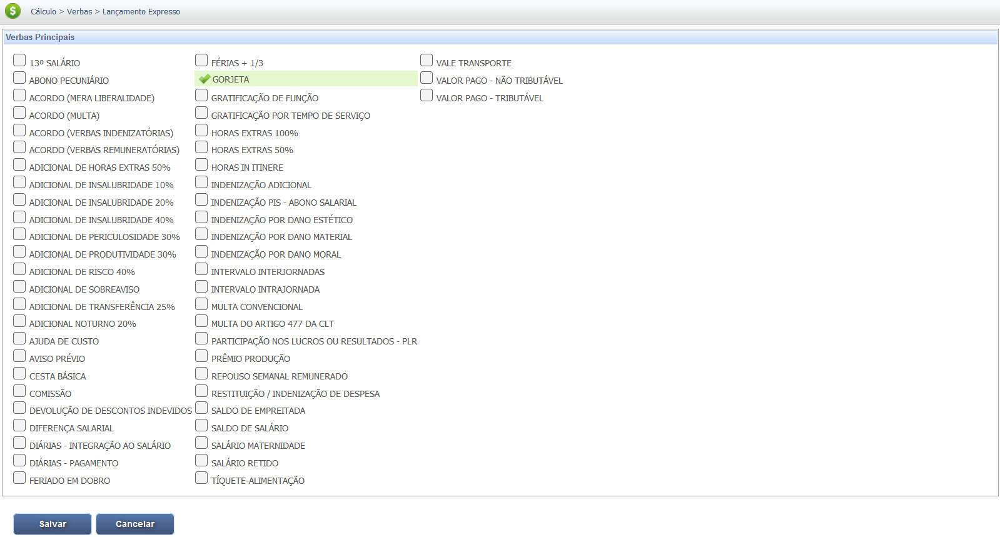

Gorjetas
A gorjeta é o valor oferecido pelo cliente (ou cobrado pelo empregador como taxa de serviço) que se destina aos empregados, seja como gratificação espontânea ou como taxa compulsória. Apesar de não ser salário fixo, a gorjeta integra a remuneração para todos os efeitos legais.
Tipos de Gorjetas e Suas Regras
A Lei da Gorjeta (Lei 13.419/2017) e a CLT regulamentam a forma como as gorjetas devem ser distribuídas e registradas. É obrigação do empregador anotar as gorjetas recebidas na carteira de trabalho e no contracheque do empregado.
A retenção de um percentual pela empresa para custeio de encargos sociais, previdenciários e trabalhistas é permitida, desde que respeitados os limites legais e de negociação coletiva.
Confira na tabela abaixo os dois principais tipos de gorjeta e suas características.
| Tipo de Gorjeta | Regra Principal |
|---|---|
| Gorjeta Compulsória (Taxa de Serviço) | Valor cobrado pela empresa como adicional na conta (Ex: os 10% em bares e restaurantes). É integralmente destinada aos empregados, descontados os percentuais de retenção legalmente permitidos à empresa. |
| Gorjeta Espontânea | Valor dado diretamente pelo cliente ao empregado, sem ser cobrado pela empresa. Também integra a remuneração para fins de encargos sociais e reflexos, mas geralmente é de distribuição mais direta. |
Base Legal e Jurisprudência
A regulamentação das gorjetas é dada pela CLT e detalhada pela Lei 13.419/2017.
Fontes Normativas
Consolidação das Leis do Trabalho (CLT):
- Artigo 457, § 3º:
Compreendem-se na remuneração do empregado, para todos os efeitos legais, além do salário devido e pago diretamente pelo empregador, como contraprestação do serviço, as gorjetas que receber.
Considera-se gorjeta não só a importância espontaneamente dada pelo cliente ao empregado, como também o valor cobrado pela empresa, como serviço ou adicional, a qualquer título, e destinado à distribuição aos empregados.
Lei nº 13.419/2017 (Lei da Gorjeta):
- Art. 1º :
Esta Lei altera a Consolidação das Leis do Trabalho (CLT), aprovada pelo Decreto-Lei nº 5.452, de 1º de maio de 1943 , para disciplinar o rateio, entre empregados, da cobrança adicional sobre as despesas em bares, restaurantes, hotéis, motéis e estabelecimentos similares.
Jurisprudência
Integração na Remuneração (TST)
Súmula 354 do TST:
Tese: As gorjetas, cobradas pelo empregador na nota de serviço ou oferecidas espontaneamente pelos clientes, integram a remuneração do empregado, não servindo de base de cálculo para as parcelas de aviso-prévio, adicional noturno, horas extras e repouso semanal remunerado (RSR).
Base de Cálculo e Deduções
Integração na Remuneração
O valor total da gorjeta distribuída ao empregado, sem a parte retida pela empresa, deve ser somado ao salário fixo para compor a base de cálculo de todos os encargos trabalhistas e sociais, exceto para o cálculo de horas extras (Súmula 354 do TST).
Deduções
Por integrar a remuneração, sobre o valor da gorjeta incidem as deduções legais, como a contribuição para o **INSS (Instituto Nacional do Seguro Social)** e o **Imposto de Renda (IRPF)**. Essas deduções são aplicadas sobre o valor total da remuneração, que é a soma do salário base e da gorjeta recebida.
**Exemplo de Deduções (INSS e IR):**
Vamos considerar um salário-base de **R$ 2.000,00** e uma gorjeta de **R$ 300,00** recebida no mês.
- **Remuneração total (Base de Cálculo):** R$ 2.000,00 + R$ 300,00 = **R$ 2.300,00**
- **Dedução de INSS:** Com base na tabela progressiva, a alíquota de INSS para essa faixa de remuneração é de, por exemplo, **11%**. O valor a ser descontado seria: R$ 2.300,00 x 0,11 = **R$ 253,00**.
- **Base de cálculo para IRPF:** A base de cálculo do Imposto de Renda é a remuneração total menos a dedução do INSS: R$ 2.300,00 - R$ 253,00 = **R$ 2.047,00**.
- **Dedução de IRPF:** Se a alíquota para essa faixa de renda for de, por exemplo, **7,5%**, e a parcela a deduzir for de **R$ 158,40** (valor hipotético da tabela progressiva), o cálculo do IR será: (R$ 2.047,00 x 0,075) - R$ 158,40 = **R$ 153,52** - R$ 158,40 = **R$ -4,88**. Neste caso hipotético, o valor seria R$ 0,00, pois não há imposto a pagar.
É importante ressaltar que as alíquotas e as faixas de dedução do INSS e do IRPF mudam periodicamente. O exemplo acima é apenas uma simulação.
Verbas Reflexas
A gorjeta, por integrar a remuneração (Art. 457, § 3º, da CLT), deve ser considerada no cálculo de todas as verbas que são apuradas sobre a remuneração. O valor utilizado é a média duodecimal das gorjetas recebidas no período de apuração. Confira as principais verbas reflexas:
A Súmula 354 do TST estabelece uma exceção importante: a gorjeta **não gera reflexos no cálculo das horas extras**.
| Verba Trabalhista | Reflexo da Gorjeta |
|---|---|
| 13º Salário | Integra o cálculo do 13º Salário (integral e proporcional) pela média duodecimal. |
| Férias + 1/3 | Integra o cálculo das Férias (vencidas e proporcionais) e o adicional de 1/3 pela média do período. |
| Aviso Prévio | Não integra a base de remuneração para cálculo do Aviso Prévio (trabalhado ou indenizado). |
| FGTS (Depósito Mensal e Multa) | Incide sobre a gorjeta, compondo a base de cálculo para o depósito mensal de 8% e para a Multa de 40%. |
| Descanso Semanal Remunerado (DSR) | Não gera reflexo, pois o DSR já está embutido no cálculo da gorjeta (ver Lei 13.419/2017). |
Atenção: A Súmula 354 do TST define expressamente que as gorjetas **NÃO** servem de base de cálculo para as horas extras, embora integrem a remuneração para os demais efeitos legais.
Calculadora (Simulação)
Use a simulação abaixo para estimar o valor máximo que a empresa pode reter das gorjetas, conforme a Lei 13.419/2017. O restante deve ser distribuído aos empregados.
Lançamento no PJe-Calc
A seguir, confira o passo a passo para o lançamento da verba no PJe-Calc, utilizando a opção "Expresso":
-
Acessar Verbas e Escolher Lançamento: No menu de
navegação à esquerda, clique na opção Verbas para iniciar o lançamento. Após o
comando,
será exibida a tela para escolha do Lançamento da Verba. Escolha a opção Expresso.

- Seleção da Verba: O sistema abrirá as opções de verbas, escolha a verba Gorjeta e clique no botão Salvar 
-
Quadro de Verbas e Ações: O sistema exibirá um quadro
com os campos:
- Ações - contendo as opções de configurações da verba selecionada (parâmetros,
ocorrências e
exclusão)

-
- Parâmetros da Verba

-
- Ocorrências da Verba

- - Excluir
- Verba Principal - verba selecionada para lançamento.
- Verba Reflexa - em que ao clicar no botão Exibir serão listadas todas as verbas reflexas ligadas a Verba Principal.
- Parametrização da Verba: Ao clicar no botão Parâmetros da Verba serão exibidas todas as configurações necessárias para a parametrização da Verba Principal.
- Registro de Ocorrências: Ao clicar no botão Ocorrências da Verba serão exibidas todas as configurações necessárias para registro das ocorrências da Verba Principal.